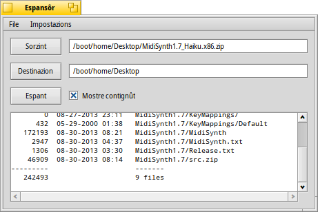

Espansôr
Espansôr
| Deskbar: | Nissune vôs, di norme al ven inviât fasint dopli clic suntun file supuartât. | |
| Posizion: | /boot/system/apps/Expander | |
| Impostazions: | ~/config/settings/Expander_Settings |
Espansôr al è un piçul strument par tirâ fûr in mût veloç i plui comuns archivis, tra tancj zip, gzip, bzip2, rar e tar.gz.
Al baste fâ dopli clic suntun archivi par viodi cheste semplice interface:

| ALT O | al vierzarà un barcon di dialic dai file, par cjatâ un archivi di decomprimi. | |
| ALT D | al vierzarà un barcon di dialic dai file, par stabilî la destinazion. | |
| ALT E | al tacarà a decomprimi. Si pues interompi cun ALT K. |
Tu puedis comutâ la visualizazion de liste dai file, segnant o gjavant la crôs su o fracant ALT L.
Espansôr al pues dome decomprimi archivis intîrs.
No tu puedis selezionâ file ugnui di tirâ fûr o zontâ/gjavâ file dal archivi.
No tu puedis selezionâ file ugnui di tirâ fûr o zontâ/gjavâ file dal archivi.
o ALT S al vierç un panel des preferencis che al ufrìs cualchi utile impostazion par regolâ il compuartament di Espansôr.
Lis opzions si spieghin di bessolis: